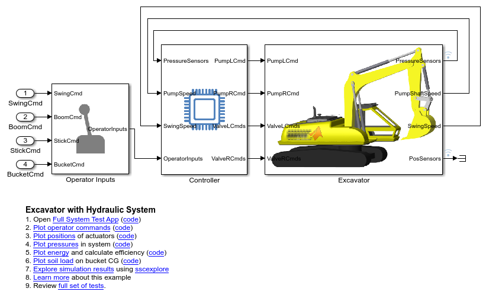
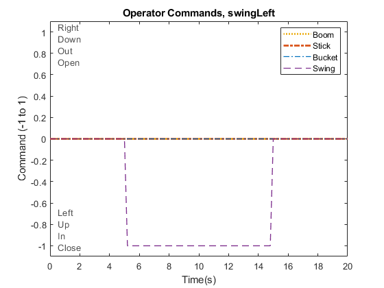
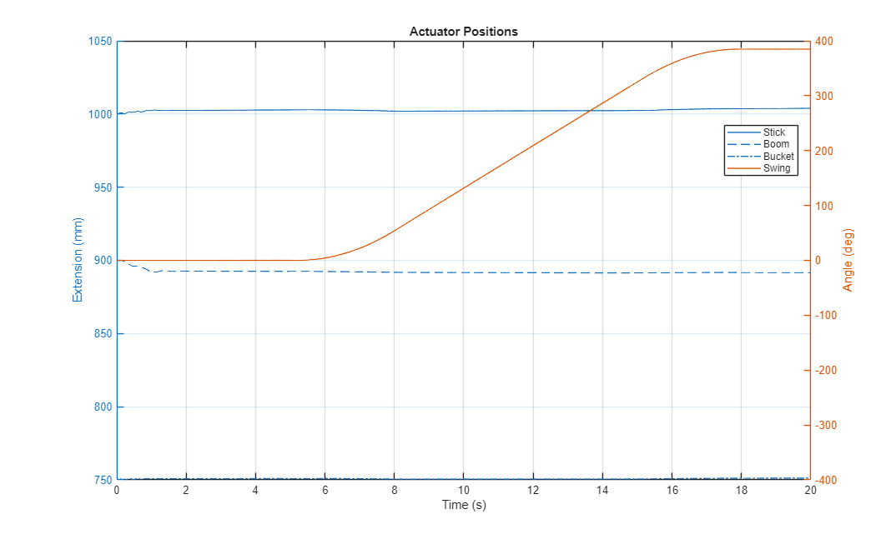
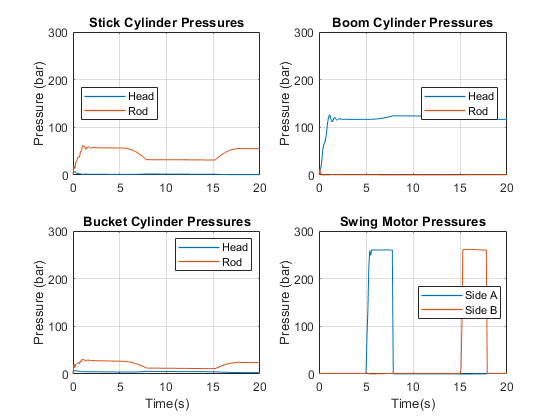
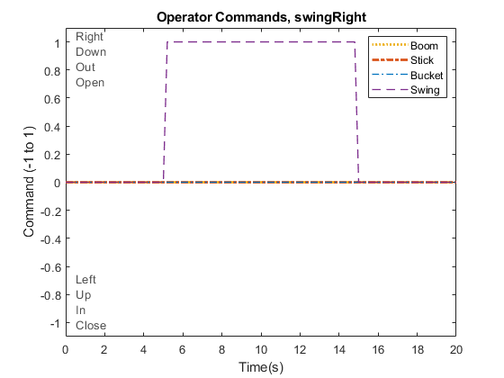
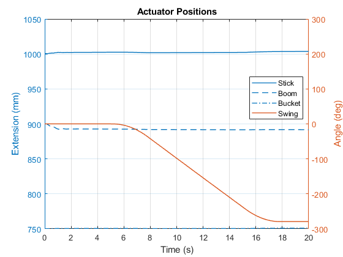

Excavator with Hydraulic System, Test Scenarios
This example models an excavator with complete hydraulic system to power cylinders for the boom, stick, and bucket, as well as the swing motor to orient the excavator. It can be used to measure the duration and efficiency of a dig cycle.
The results below are from tests that exercise each actuator is exercised individually, and then a full dig cycle is completed. Positions, pressures, and the energy expended are reported in plots for each scenario.
Contents
Model
Swing Left
  Swing Right
 